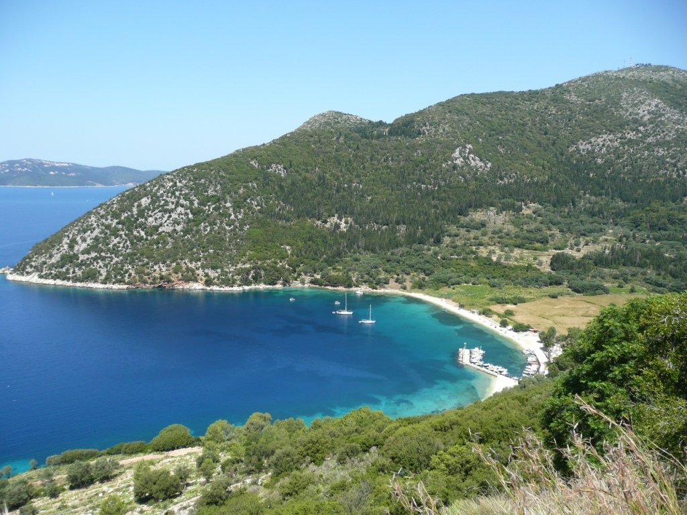

terenceithaque

Polis bay is a beach located in the village of Stavros , 18 kilometers from Vathy .
Polis bay is a beautiful beach with clear turquoise water that sparkles under the sparkling under the sun.
Are you looking for the content of a particular beach ? Click right here to access beaches index
For general index, that's right here
Next beach over there
Learn more on Polis Bay on Greeka
Do you have questions about the content of the site updates? Click here to know everything about updates.